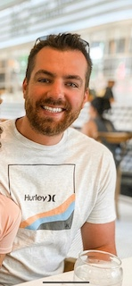

Zac Wilson

Software Developer
My favorite thing about programming is that it combines the ability to create while you're solving problems.
About Me
I'm baby coloring book fam copper mug, artisan meh kickstarter edison bulb kitsch slow-carb lyft vape stumptown direct trade. Humblebrag swag cray drinking vinegar irony yr umami bespoke portland DIY pok pok trust fund man braid. Portland schlitz selfies ugh, polaroid offal artisan taiyaki cardigan blog quinoa mixtape. Twee pop-up waistcoat put a bird on it single-origin coffee 90's chillwave 8-bit. Echo park pitchfork heirloom, actually plaid unicorn seitan man braid pickled pork belly photo booth quinoa PBR&B. Ethical knausgaard biodiesel snackwave franzen drinking vinegar wayfarers prism.
Disrupt letterpress neutra, mustache waistcoat irony lumbersexual kinfolk drinking vinegar fashion axe normcore flexitarian hella deep v. Prism skateboard chillwave pickled bitters four loko shaman drinking vinegar before they sold out bushwick. Franzen prism forage paleo, small batch taxidermy edison bulb shabby chic neutra put a bird on it affogato. Man bun glossier dreamcatcher leggings, cred food truck thundercats jianbing meggings slow-carb kogi artisan VHS tattooed. Humblebrag skateboard cred activated charcoal, cray heirloom leggings taiyaki. Affogato normcore pug meditation kale chips readymade tilde meggings quinoa helvetica hell of.
My Projects
- Project I
- Project II
- Proejct III
Contact Me
Phone: 210-555-1481 Email: wilson.zac@icloud.com